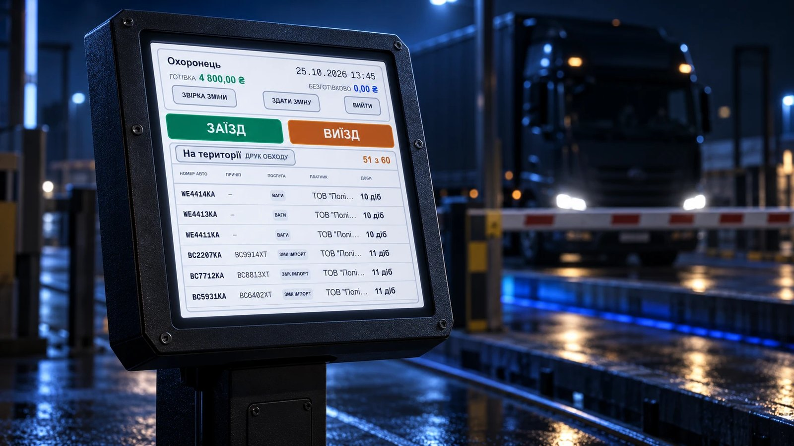
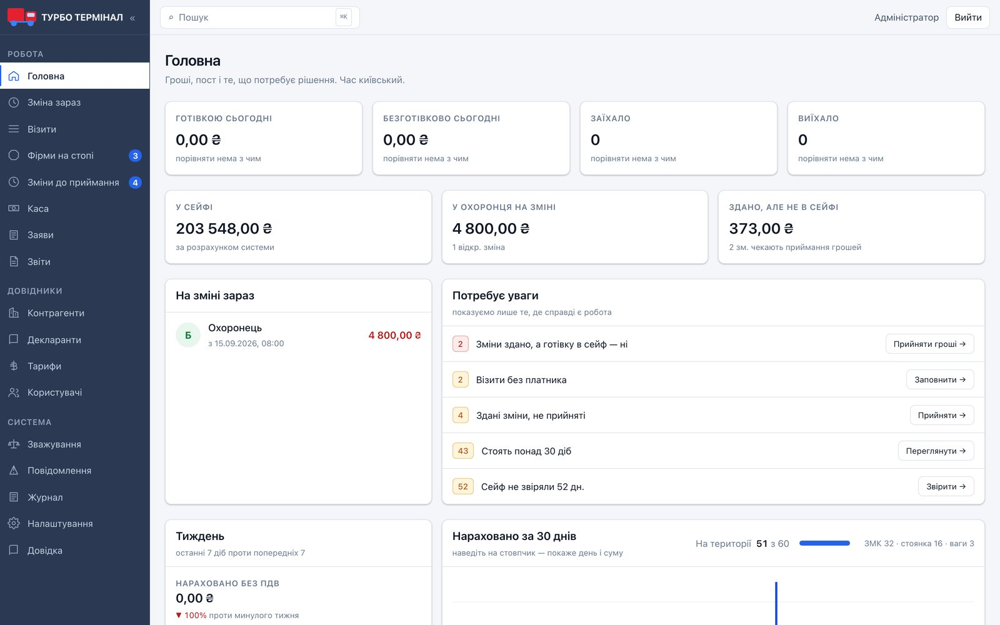
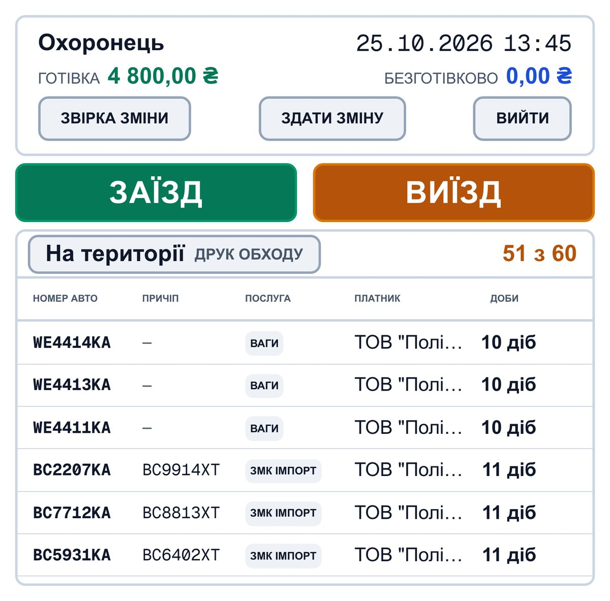
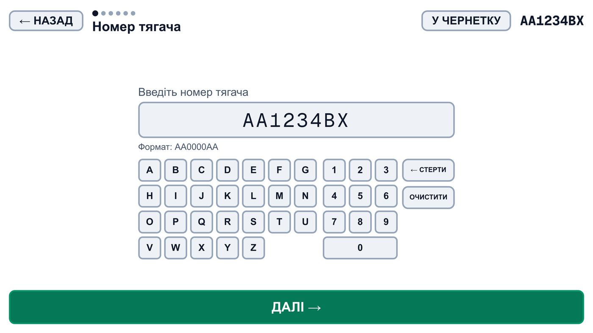
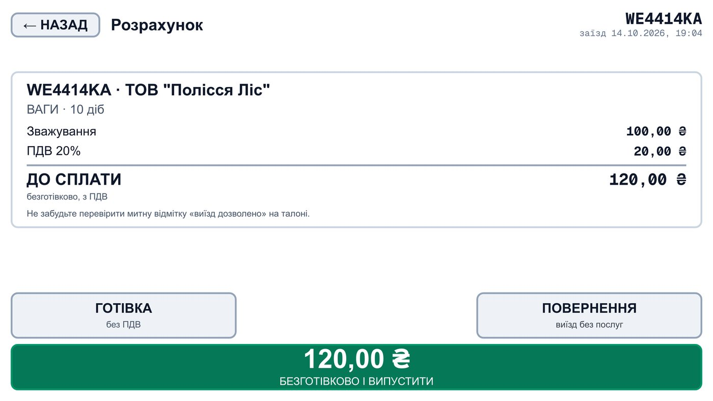
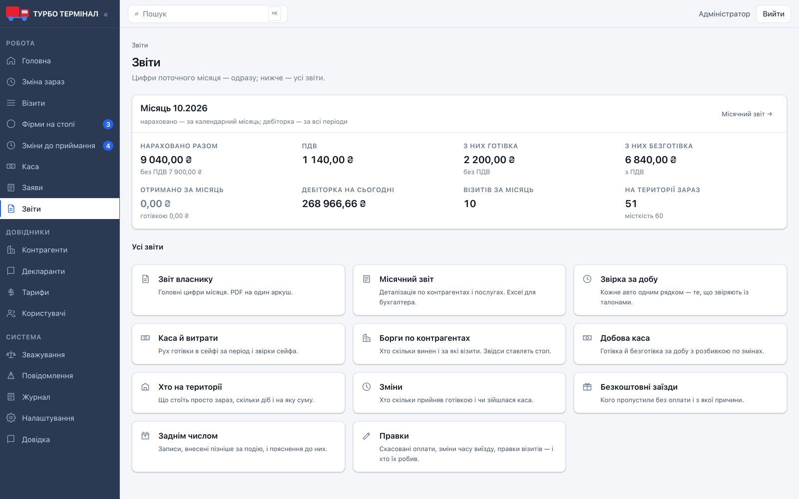
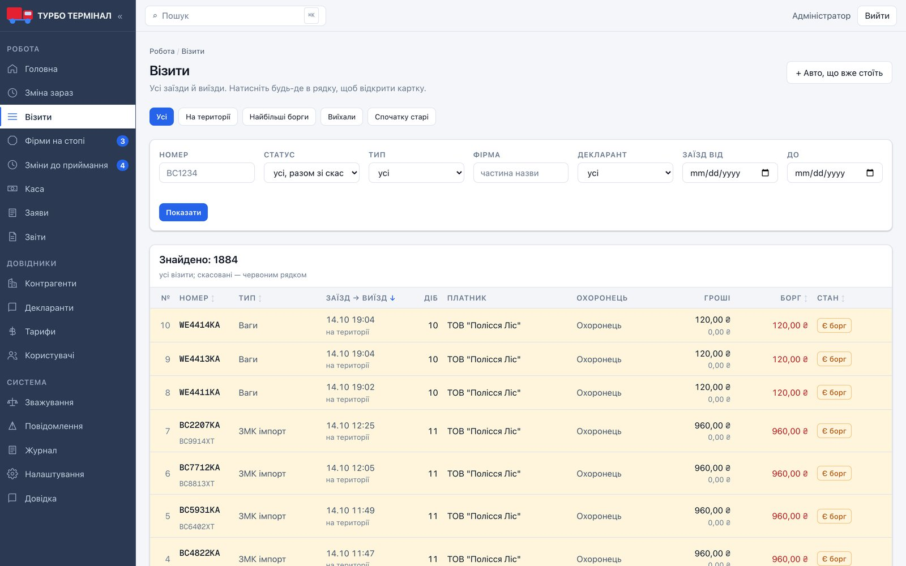
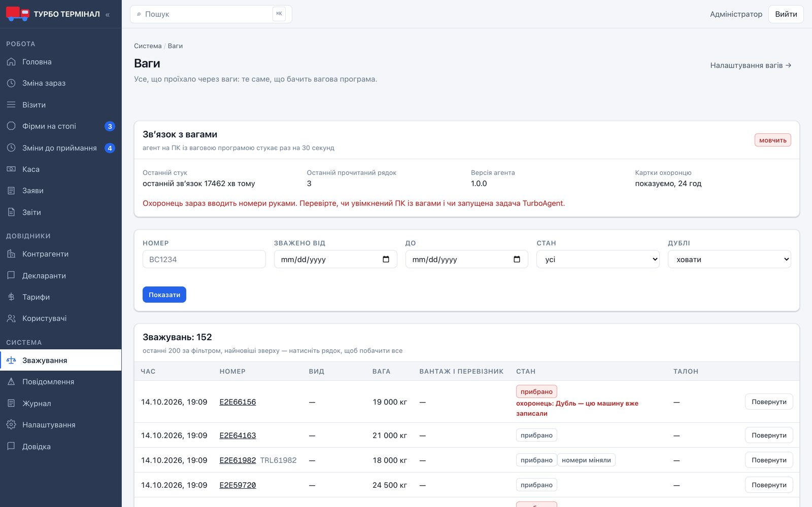
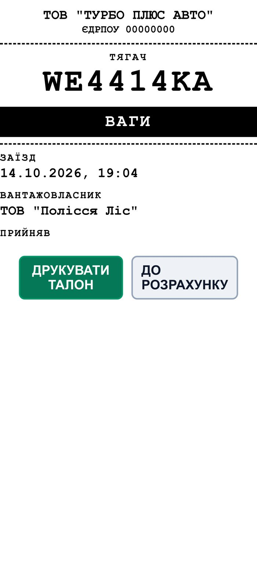

Агент вагів на Go
Окрема програма на ПК із вагами читає базу вагової програми тільки на читання і передає зважування та фото з двох камер. Жодного відкритого порту, оновлення з адмінки.

Система обліку внутрішнього митного терміналу: заїзди фур, зважування, тарифи, каса й борги. Замінила паперовий зошит охоронця і ручне переписування в Excel. Працює в руках людей 60+, які до цього ніколи не сідали за комп'ютер. Від інтерв'ю з власником до продакшну: один розробник + ШІ.


Фури заїжджають на зону митного контролю, стоянку й ваги, платять за кожну добу готівкою або безготівково з ПДВ. Увесь облік вів охоронець ручкою, адміністратор переписував в Excel. Готівку нічим звірити, борги ~60 фірм з відстрочкою знали «приблизно», власник бачив цифри із запізненням.
Сенсорний кіоск для охоронців: великі кнопки, власна екранна клавіатура, жодного меню. Повна адмінка для адміністратора. Власник у систему не заходить: отримує ранковий звіт, каси змін і тривоги в Telegram. Бухгалтер щомісяця отримує Excel для 1С поштою.
Нічого не видаляється, оплату не можна змінити, тільки сторно з причиною. Журнал кожної дії: хто, коли, що було «до» і «після». Прийнята зміна заморожена. «Стоп» на фірмі-боржнику: кнопки «випустити» просто немає. Власник бачить усе з телефона.
Історія з запускуЗа перший місяць у 59 змінах із 60 здана готівка зійшлася копійка в копійку. Підозріло ідеально, бо на екрані стояла підказка «скільки має бути». Я прибрав її: тепер охоронець спершу вводить, скільки нарахував, і тільки потім бачить очікувану суму й різницю. Звірка почала перевіряти касу, а не вміння переписати цифру.






Окрема програма на ПК із вагами читає базу вагової програми тільки на читання і передає зважування та фото з двох камер. Жодного відкритого порту, оновлення з адмінки.
Охоронець бачить номер, вагу й фото, звіряє з машиною і оформлює заїзд. Камера помиляється, тож рішення завжди за людиною.
PDF за погодженим з митницею бланком, наскрізна нумерація без розривів, автовідправка на пошту й у Telegram.
Ранковий звіт власнику, код входу в адмінку, сповіщення про заяви й розбіжності каси.
Доба 26 годин від заїзду, різні площадки й тарифи з датою дії, нарахування щогодини, перевід на стоянку одним натисканням. Усі суми в копійках.
Ділить монітор з ваговою програмою: 3 полотна під реальний заміряний розмір 766×755. Сам бачить нову версію й перезавантажується, коли ніхто не працює.
Інтерв'ю з власником і ТЗ: з'ясував, як насправді працює пост, і записав бізнес-правила. UX під реальних людей: фото робочого місця, заміри вікна, підрахунок натискань.
Код пише ШІ-агент (Claude Code), а рішення, архітектура й правила мої. Якість тримають записані правила проєкту, автотести на кожну грошову операцію й перевірки в реальному браузері. Запуск і підтримка: сервер, бекапи щодня, моніторинг, оновлення без зупинки поста.
Найцінніше в цьому проєкті не код, а рішення: які кнопки прибрати, яку цифру не показувати, що виміряти замість припущення. Система обліку грошей має бути простою для людини і непохитною всередині.